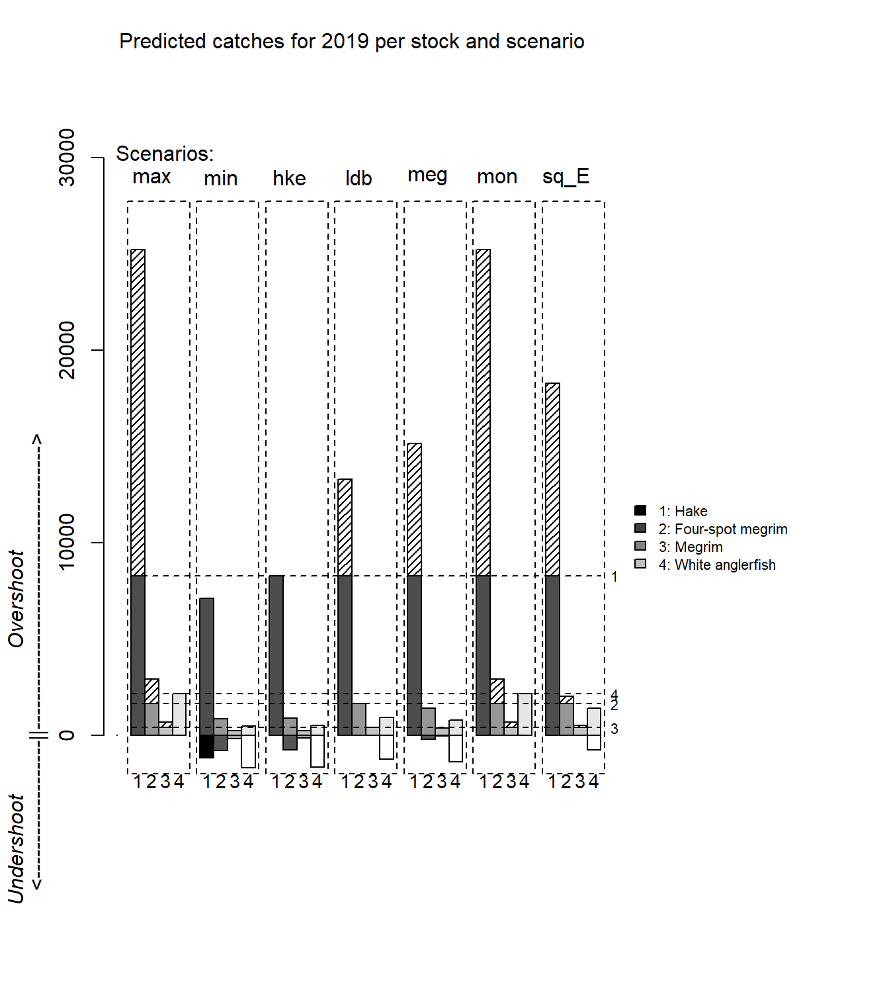

## Warning: package 'knitr' was built under R version
## 3.5.3FLBEIA (Garcia et al. 2017) provides a battery of tutorials for learning how to use this software. This is the sixth tutorial of FLBEIA and it is a practical guide about the generation of mixed-fisheries advice in ICES using FLBEIA. It is divided in the following sections:
At the end of the tutorial some exercises are proposed.
To follow this tutorial you should have installed the following packages:
If you are using Windows, please use 64-bit R version because some of the packages (mainly FLash) do not work in 32-bit.
install.packages( c("ggplot2"))
install.packages( c("FLCore", "FLFleet", "FLBEIA",
"FLash", "FLAssess", "FLXSA"),
repos="http://flr-project.org/R")It has to be noted that packages FLCore, FLFleets and FLBEIA have to be installed in this exact order, as alternative orders can cause some problems.
Load all the necessary packages.
library(FLBEIA)
library(ggplot2)This tutorial uses the objects produced in the ‘Smat conditioning II’ tutorial. In that tutorial three objects were created, the FLBiols object, the FLFLeet object and the covars object. Here, only the first two objects will be used. The rest of the objects needed will be created now. Instead of using the function from the ‘Smart Conditionin I’ module we will use the basic FLR functions.
The data used in the tutorial corresponds with the Demersal fishery operating in Iberian Coast. The fishery is formed by two countries, Spain and Portugal, and several fleets operating with different gears. An squeme of the case sutdy is shown below:
First we will download the data generated in the ‘Smart Conditioning II’ tutoria from the FLR we page using R commands
tdir <- tempdir()
# download.file("http://www.flr-project.org/doc/src/flbeia_mixed_fisheries.zip",
# file.path(tdir, "flbeia_mixed_fisheries.zip"))
# unzip(file.path(tdir, "flbeia_mixed_fisheries.zip"), exdir=tdir)
unzip("src/flbeia_mixed_fisheries.zip", exdir=tdir)
tdir <- file.path(tdir,"flbeia_mixed_fisheries")load(file.path(tdir,'Smart_Cond_II.Rdata'))
stknms <- names(biols)Create the FLSRsim object, instead of using the functions in the smart conditioning tutorial we will create by hand using the basic commands in FLCore library.
First we Create an FLQuant with the right dimension and all elements equal to 1. This object will be useful to give the dimension to the objects we need to create and to fill some of the FLQuants.
flq1 <- FLQuant(1,dim = c(1,26), dimnames = list(quant = 'all', year = 2000:2025))For each of the stocks, first we create the FLSRsim object and in the function call of the same name we fill in the slots we already know. We will not introduce any uncertainty in recruitment hence we use the flq1 object to fill the uncertainy slot.
hke.sr <- FLSRsim(rec = biols[['HKE']]@n[1,], ssb = ssb(biols[['HKE']]), uncertainty = flq1,
proportion = flq1, model = 'segreg',name = 'HKE')In the short term forecast a constant recruitment is used. We model it using a geometric mean model and fill in the parameter manually using the value used by the assessment working group.
hke.sr <- FLSRsim(rec = biols[['HKE']]@n[1,], ssb = ssb(biols[['HKE']]), uncertainty = flq1,
proportion = flq1, model = 'geomean',name = 'HKE')
hke.sr@params[] <- 92476For the rest of the stocks we do exactly the same:
ldb.sr <- FLSRsim(rec = biols[['LDB']]@n[1,], ssb = ssb(biols[['LDB']]), uncertainty = flq1,
proportion = flq1, model = 'geomean',name = 'LDB')
ldb.sr@params[] <- 53614
meg.sr <- FLSRsim(rec = biols[['MEG']]@n[1,], ssb = ssb(biols[['MEG']]), uncertainty = flq1,
proportion = flq1, model = 'geomean',name = 'MEG')
meg.sr@params[] <- 3559
mon.sr <- FLSRsim(rec = biols[['MON']]@n[1,], ssb = ssb(biols[['MON']]), uncertainty = flq1,
proportion = flq1, model = 'geomean',name = 'MON')
mon.sr@params[] <- 760Finally we join all the FLSRsim objects in a single list, that we will use later in the call to FLBEIA.
SRs <- list(HKE = hke.sr, LDB = ldb.sr, MEG = meg.sr, MON = mon.sr)The advice object is a list with two elements: * TAC: An FLQuant with the single stock total allowable catches (one row per stock). * quota.share: A list with one element per stock and for each stock an FLQuant with the proportion of the TAC that belongs to each of the fleets.
So first, we create the structure of the advice object:
advice <- list(TAC = FLQuant(NA, dimnames= list(stocks = stknms, year = 2000:2025)),
quota.share = lapply(stknms, function(x){
FLQuant(NA,
dimnames = list(fleets = names(fleets), year = 2000:2025))}))The TAC for 2019 and 2018.
advice$TAC['HKE', ac(2018)] <- 9258
advice$TAC['LDB', ac(2018)] <- 1151
advice$TAC['MEG', ac(2018)] <- 236
advice$TAC['MON', ac(2018)] <- 1898
advice$TAC['HKE', ac(2019:2025)] <- 8281
advice$TAC['LDB', ac(2019:2025)] <- 1633
advice$TAC['MEG', ac(2019:2025)] <- 399
advice$TAC['MON', ac(2019:2025)] <- 2153For thee quota-share in the projection we use the historical mean.
names(advice$quota.share) <- stknms
for(st in stknms){
for(fl in names(fleets)){
if(st %in% catchNames(fleets[[fl]])){
advice$quota.share[[st]][fl,] <- quantSums(catchWStock.f(fleets[[fl]], st))/
quantSums(catchWStock(fleets, st))
advice$quota.share[[st]][fl,ac(2018:2025)] <-
yearMeans(advice$quota.share[[st]][fl,ac(2015:2017)])
}
else advice$quota.share[[st]][fl,] <- 0
}}These are all the data objects we need to generate the mixed-fisheries advice. Now we need to create the control objects.
Each of the model components in FLBEIA needs a control object to tell how to simulate the system.
In the ‘main.ctrl’ object we set the time frame of the simulation and tell R is the management of the stocks is done simultaneously or not. The last argument is important when we use for example multi-stock HCRs.
main.ctrl <- list()
main.ctrl$sim.years <- c(initial = 2018, final = 2025)
main.ctrl$SimultaneousMngt <- FALSEFor all the stocks we use an age structured population growth model:
growth.model <- c(rep('ASPG',4))
biols.ctrl <- create.biols.ctrl (stksnames=stknms,growth.model= growth.model)The fleets.ctrl objects is one of the most complex controls because we model several processes, the effort allocation in the short term, the catch production, the price formation and the entry-exit of new vessels in the fishery. For each process R needs to now how to proceed. We will use the create.fleets.ctrl function to facilitate the construction of the object. First we generate some of the arguments that will be use in the call to the function.
n.flts.stks <- sapply(sapply(fleets, catchNames), length)
flts.stksnames <- NULL
for(f in 1:length(fleets)) flts.stksnames <- c(flts.stksnames, catchNames(fleets[[f]]))
catch.models <- rep("CobbDouglasAge", sum(n.flts.stks))
names(catch.models) <- flts.stksnames
capital.models <- rep('fixedCapital', length(fleets))
flq <- FLQuant(dimnames= list(year = 2000:2025, iter = 1)) In the ICES mixed-fisheries advice the single stock TAC advices are evaluated using different scenarios about fleet dynamics. Hence, here we create a different control object for each scenario.
In the first scenario we assume that the fishing effort in the TAC year will be the equal to the effor tin the last year. To simulate this scenario in FLBEIA, we need to fill in the effort and effshare slots in the FLFLeet object using the historical means and a control object with the effort model equal to ‘fixedEffort’. The slots were already populated with the historical mean in the ‘Smart Conditioning II’ tutorial.
In all the scenario we assume that the restriction is on catch, an not in landings.
fleets.ctrl.Esq <- create.fleets.ctrl(
fls = names(fleets),
n.fls.stks = n.flts.stks,
fls.stksnames = flts.stksnames,
effort.models = rep('SMFB', length(fleets)),
price.models = rep("fixedPrice", sum(n.flts.stks)),
catch.models = catch.models,
flq = flq,
restriction.SP_GNS = 'catch', restriction.PT_GNS = 'catch',
restriction.PT_GTR = 'catch', restriction.SP_GTR = 'catch',
restriction.SP_LLS = 'catch', restriction.PT_MIS = 'catch',
restriction.SP_MIS = 'catch', restriction.PT_OTB = 'catch',
restriction.SP_OTB = 'catch', restriction.SP_OTB_24m = 'catch',
restriction.OTH_OTH = 'catch',restriction.SP_PTB = 'catch')
for(fl in names(fleets)) fleets.ctrl.Esq[[fl]][['effort.model']] <- 'fixedEffort'In the rest of the scenarios the effort share along metiers, the proportion of the effort that is exerted in each metier, is set equal to the historical mean, and the total effort at fleet level is calculated based on the effort corresponding to single stock TACs. This behaviour is obtained using the ‘SMFB’ function. First, for each fleet, the total effort corresponding to the quota share of its stock is calculated. A vector of efforts is obtained with each element of the vector corresponding to the quota-share of one stock. Then, different options are used to select one of the efforts of the vector.
In the ‘max’ option, for each fleet, in the vector of possible efforts the maximum is selected. Depending on the catchabilities, for each fleet the maximum will correspond with the quota-share of a different stock:
fleets.ctrl.max <- create.fleets.ctrl(
fls = names(fleets),
n.fls.stks = n.flts.stks,
fls.stksnames = flts.stksnames,
effort.models = rep('SMFB', length(fleets)),
price.models = rep("fixedPrice", sum(n.flts.stks)),
flq = flq,
catch.models = catch.models,
capital.models = capital.models,
restriction.SP_GNS = 'catch', restriction.PT_GNS = 'catch',
restriction.PT_GTR = 'catch', restriction.SP_GTR = 'catch',
restriction.SP_LLS = 'catch', restriction.PT_MIS = 'catch',
restriction.SP_MIS = 'catch', restriction.PT_OTB = 'catch',
restriction.SP_OTB = 'catch', restriction.SP_OTB_24m = 'catch',
restriction.OTH_OTH = 'catch', restriction.SP_PTB = 'catch',
effort.restr.SP_GNS = 'max', effort.restr.PT_GNS = 'max',
effort.restr.PT_GTR = 'max', effort.restr.SP_GTR = 'max',
effort.restr.SP_LLS = 'max', effort.restr.PT_MIS = 'max',
effort.restr.SP_MIS = 'max', effort.restr.PT_OTB = 'max',
effort.restr.SP_OTB = 'max', effort.restr.SP_OTB_24m = 'max',
effort.restr.OTH_OTH = 'max', effort.restr.SP_PTB = 'max') In the opposite side, the ‘min’ option selects the minimum effort in each of the vectors. This options is usually used to model the landing obligation policy, where the fleet are oblied to land all the catches and over-quota catches are not allowed.
fleets.ctrl.min <- create.fleets.ctrl(
fls = names(fleets),
n.fls.stks = n.flts.stks,
fls.stksnames = flts.stksnames,
effort.models = rep('SMFB', length(fleets)),
price.models = rep("fixedPrice", sum(n.flts.stks)),
flq = flq,
catch.models = catch.models,
capital.models = capital.models,
restriction.SP_GNS = 'catch', restriction.PT_GNS = 'catch',
restriction.PT_GTR = 'catch', restriction.SP_GTR = 'catch',
restriction.SP_LLS = 'catch', restriction.PT_MIS = 'catch',
restriction.SP_MIS = 'catch', restriction.PT_OTB = 'catch',
restriction.SP_OTB = 'catch', restriction.SP_OTB_24m = 'catch',
restriction.OTH_OTH = 'catch', restriction.SP_PTB = 'catch',
effort.restr.SP_GNS = 'min', effort.restr.PT_GNS = 'min',
effort.restr.PT_GTR = 'min', effort.restr.SP_GTR = 'min',
effort.restr.SP_LLS = 'min', effort.restr.PT_MIS = 'min',
effort.restr.SP_MIS = 'min', effort.restr.PT_OTB = 'min',
effort.restr.SP_OTB = 'min', effort.restr.SP_OTB_24m = 'min',
effort.restr.OTH_OTH = 'min', effort.restr.SP_PTB = 'min') Finally, for each stock considered in the analysis, an scenario is set where the fleets stop fishing when the quota-share of that stock is reached.
fleets.ctrl.HKE <- create.fleets.ctrl(
fls = names(fleets),
n.fls.stks = n.flts.stks,
fls.stksnames = flts.stksnames,
effort.models = rep('SMFB', length(fleets)),
price.models = rep("fixedPrice", sum(n.flts.stks)),
flq = flq,
catch.models = catch.models,
capital.models = capital.models,
restriction.SP_GNS = 'catch', restriction.PT_GNS = 'catch',
restriction.PT_GTR = 'catch', restriction.SP_GTR = 'catch',
restriction.SP_LLS = 'catch', restriction.PT_MIS = 'catch',
restriction.SP_MIS = 'catch', restriction.PT_OTB = 'catch',
restriction.SP_OTB = 'catch', restriction.SP_OTB_24m = 'catch',
restriction.OTH_OTH = 'catch', restriction.SP_PTB = 'catch',
effort.restr.SP_GNS = 'HKE', effort.restr.PT_GNS = 'HKE',
effort.restr.PT_GTR = 'HKE', effort.restr.SP_GTR = 'HKE',
effort.restr.SP_LLS = 'HKE', effort.restr.PT_MIS = 'HKE',
effort.restr.SP_MIS = 'HKE', effort.restr.PT_OTB = 'HKE',
effort.restr.SP_OTB = 'HKE', effort.restr.SP_OTB_24m = 'HKE',
effort.restr.OTH_OTH = 'HKE', effort.restr.SP_PTB = 'HKE') fleets.ctrl.LDB <- create.fleets.ctrl(
fls = names(fleets),
n.fls.stks = n.flts.stks,
fls.stksnames = flts.stksnames,
effort.models = rep('SMFB', length(fleets)),
price.models = rep("fixedPrice", sum(n.flts.stks)),
flq = flq,
catch.models = catch.models,
capital.models = capital.models,
restriction.SP_GNS = 'catch', restriction.PT_GNS = 'catch',
restriction.PT_GTR = 'catch', restriction.SP_GTR = 'catch',
restriction.SP_LLS = 'catch', restriction.PT_MIS = 'catch',
restriction.SP_MIS = 'catch', restriction.PT_OTB = 'catch',
restriction.SP_OTB = 'catch', restriction.SP_OTB_24m = 'catch',
restriction.OTH_OTH = 'catch', restriction.SP_PTB = 'catch',
effort.restr.SP_GNS = 'LDB', effort.restr.PT_GNS = 'LDB',
effort.restr.PT_GTR = 'LDB', effort.restr.SP_GTR = 'LDB',
effort.restr.SP_LLS = 'LDB', effort.restr.PT_MIS = 'LDB',
effort.restr.SP_MIS = 'LDB', effort.restr.PT_OTB = 'LDB',
effort.restr.SP_OTB = 'LDB', effort.restr.SP_OTB_24m = 'LDB',
effort.restr.OTH_OTH = 'LDB', effort.restr.SP_PTB = 'LDB') fleets.ctrl.MON <- create.fleets.ctrl(
fls = names(fleets),
n.fls.stks = n.flts.stks,
fls.stksnames = flts.stksnames,
effort.models = rep('SMFB', length(fleets)),
price.models = rep("fixedPrice", sum(n.flts.stks)),
flq = flq,
catch.models = catch.models,
capital.models = capital.models,
restriction.SP_GNS = 'catch', restriction.PT_GNS = 'catch',
restriction.PT_GTR = 'catch', restriction.SP_GTR = 'catch',
restriction.SP_LLS = 'catch', restriction.PT_MIS = 'catch',
restriction.SP_MIS = 'catch', restriction.PT_OTB = 'catch',
restriction.SP_OTB = 'catch', restriction.SP_OTB_24m = 'catch',
restriction.OTH_OTH = 'catch', restriction.SP_PTB = 'catch',
effort.restr.SP_GNS = 'MON', effort.restr.PT_GNS = 'MON',
effort.restr.PT_GTR = 'MON', effort.restr.SP_GTR = 'MON',
effort.restr.SP_LLS = 'MON', effort.restr.PT_MIS = 'MON',
effort.restr.SP_MIS = 'MON', effort.restr.PT_OTB = 'MON',
effort.restr.SP_OTB = 'MON', effort.restr.SP_OTB_24m = 'MON',
effort.restr.OTH_OTH = 'MON', effort.restr.SP_PTB = 'MON') fleets.ctrl.MEG <- create.fleets.ctrl(
fls = names(fleets),
n.fls.stks = n.flts.stks,
fls.stksnames = flts.stksnames,
effort.models = rep('SMFB', length(fleets)),
price.models = rep("fixedPrice", sum(n.flts.stks)),
flq = flq,
catch.models = catch.models,
capital.models = capital.models,
restriction.SP_GNS = 'catch', restriction.PT_GNS = 'catch',
restriction.PT_GTR = 'catch', restriction.SP_GTR = 'catch',
restriction.SP_LLS = 'catch', restriction.PT_MIS = 'catch',
restriction.SP_MIS = 'catch', restriction.PT_OTB = 'catch',
restriction.SP_OTB = 'catch', restriction.SP_OTB_24m = 'catch',
restriction.OTH_OTH = 'catch', restriction.SP_PTB = 'catch',
effort.restr.SP_GNS = 'MEG', effort.restr.PT_GNS = 'MEG',
effort.restr.PT_GTR = 'MEG', effort.restr.SP_GTR = 'MEG',
effort.restr.SP_LLS = 'MEG', effort.restr.PT_MIS = 'MEG',
effort.restr.SP_MIS = 'MEG', effort.restr.PT_OTB = 'MEG',
effort.restr.SP_OTB = 'MEG', effort.restr.SP_OTB_24m = 'MEG',
effort.restr.OTH_OTH = 'MEG', effort.restr.SP_PTB = 'MEG') Covariates are not needed in the mixed-fisheries advice.
covars.ctrl <- NULLThere is not management procedure in mixed-fisheries advice evaluation because the management advice is directly taken from the single-stock advice and in the simulations the consequences of those advice are simply evaluated. However, we need to tell FLBEIA that we don’t want to do anything in the management procedure. This is obtained using the ‘NoObsStock’ option in the observation model, the ‘NoAssessment’ option in the assessment model and the ‘fixedAdvice’ in the advice model.
obs.ctrl <- create.obs.ctrl(stksnames = stknms,
stkObs.models = rep('NoObsStock',length(stknms)))assess.ctrl <- create.assess.ctrl(stksnames = stknms,
assess.models = rep('NoAssessment',length(stknms)))advice.ctrl <- create.advice.ctrl(stksnames = stknms,
HCR.models = rep('fixedAdvice', length(stknms)))Before evaluating the single stock TAC advice in a mixed-fisheries framework it is necessary to check if the data in the objects we have created is consistent with the data in the short term forecast conducted by the stock assessment working groups. As the population dynamic models used in the assessment working groups may differ from the ones used for the mixed fisheries advice, we need to ensure that the differences obtained come from the modelling approaches used and not from the data.
The checking is done doing a short term forecast at single stock basis, using the objects we have created before and using the catch constraint used by the assessment working groups: * The catch corresponding to statu quo fishing mortality in the assessment year (2018 in this case). * The TAC in the advice year (2019 in this case).
In the single stock short term forecast usually fishing mortality is used for the proyection instead of catch. However, as fishing mortality can not be used in FLBEIA as a restrictor we constraint the fishing using the catches obtained in the STF. After conductiin the STF with FLBEIA we compare the SSB and fishing mortality indicators obtained in the single stock forecast by the working groups in 2018, 2019 and 2020.
First, we update the year range in the main.ctrl object because in these simulations we only need three year projection. In the third year, 2020, only the OM is run so we can calculate the SSB at the begining of that year.
main.ctrl[[1]][2] <- 2020The checking is done stock by stock. First we will do it for hake and afterwards we will do exactly the same for the rest of the stocks.
Create an advice object corresponding to the catches used in the single stock short term forecast for Hake.
advice.hke <- advice
advice.hke$TAC['HKE', '2018'] <- 16709
advice.hke$TAC['HKE', '2019'] <- 8281 Run FLBEIA with the fleets constriained by the HKE TAC.
for(fl in names(fleets)) fleets[[fl]]@capacity[] <- 1e12
hke <- FLBEIA(biols = biols,
SRs = SRs,
BDs = NULL,
fleets = fleets,
indices = NULL,
advice = advice.hke,
main.ctrl = main.ctrl,
biols.ctrl = biols.ctrl,
fleets.ctrl = fleets.ctrl.HKE,
covars.ctrl = NULL,
obs.ctrl = obs.ctrl,
assess.ctrl = assess.ctrl,
advice.ctrl = advice.ctrl) Use the ‘bioSum’ function to get the main biological indicators. As the year dimension of the objects covers up to 2025 and since 2021 the ‘n’ slot is empty we need to reduce the range for which the biological indicators are calculated.
hke.sum <- bioSum(hke, years = ac(2000:2020), long = TRUE)Create two vectors with the indicators obtained in the assessment working groups.
ssb1719_wg_hke <- c(23885, 23904, 36104)
f1718_wg_hke <- c(0.6,0.25)Comparison between the indicators obtained here and those obtained in the assessment workin group. The assessment of hake is conducted using a length structure and quarterly model so sginificant differences were expected. However, differences between +/-15% range are considered acceptable.
round(subset(hke.sum, year %in% 2018:2020 & indicator %in% c('ssb') & stock == 'HKE')$value/
ssb1719_wg_hke,2)## [1] 0.97 1.03 0.98round(subset(hke.sum, year %in% 2018:2019 & indicator %in% c('f') & stock == 'HKE')$value/
f1718_wg_hke,2)## [1] 0.89 0.89For the rest of the stocks we do exactly the same.
Four spot megrim (LDB):
advice.ldb <- advice
advice.ldb$TAC['LDB', '2018'] <- 2159 # catch corresponding to Fsq
advice.ldb$TAC['LDB', '2019'] <- 1633 # TAC in 2019
ldb <- FLBEIA(biols = biols,
SRs = SRs,
BDs = NULL,
fleets = fleets,
indices = NULL,
advice = advice.ldb,
main.ctrl = main.ctrl,
biols.ctrl = biols.ctrl,
fleets.ctrl = fleets.ctrl.LDB,
covars.ctrl = NULL,
obs.ctrl = obs.ctrl,
assess.ctrl = assess.ctrl,
advice.ctrl = advice.ctrl)
ldb.sum <- bioSum(ldb, years = ac(2000:2020), long = TRUE)ssb1719_wg_ldb <- c(8821, 8836, 9286)
f1718_wg_ldb <- c(0.28,0.193)
round(subset(ldb.sum, year %in% 2018:2020 & indicator %in% c('ssb') & stock == 'LDB')$value/
ssb1719_wg_ldb,2)## [1] 1 1 1round(subset(ldb.sum, year %in% 2018:2019 & indicator %in% c('f') & stock == 'LDB')$value/
f1718_wg_ldb,2)## [1] 1.04 1.08Megrim:
advice.meg <- advice
advice.meg$TAC['MEG', '2018'] <- 642 # catch corresponding to Fsq
advice.meg$TAC['MEG', '2019'] <- 399 # TAC in 2019
meg <- FLBEIA(biols = biols,
SRs = SRs,
BDs = NULL,
fleets = fleets,
indices = NULL,
advice = advice.meg,
main.ctrl = main.ctrl,
biols.ctrl = biols.ctrl,
fleets.ctrl = fleets.ctrl.MEG,
covars.ctrl = NULL,
obs.ctrl = obs.ctrl,
assess.ctrl = assess.ctrl,
advice.ctrl = advice.ctrl)
meg.sum <- bioSum(meg, years = ac(2000:2020), long = TRUE)
ssb1719_wg_meg <- c(2504, 2241, 2129)
f1718_wg_meg <- c(0.29,0.191)round(subset(meg.sum, year %in% 2018:2020 & indicator %in% c('ssb') & stock == 'MEG')$value/
ssb1719_wg_meg,2)## [1] 1.00 1.01 1.03round(subset(meg.sum, year %in% 2018:2019 & indicator %in% c('f') & stock == 'MEG')$value/
f1718_wg_meg,2)## [1] 1.06 0.96Monkfish:
advice.mon <- advice
advice.mon$TAC['MON', '2018'] <- 1556 # catch corresponding to Fsq
advice.mon$TAC['MON', '2019'] <- 2153 # TAC 2019
mon <- FLBEIA(biols = biols,
SRs = SRs,
BDs = NULL,
fleets = fleets,
indices = NULL,
advice = advice.mon,
main.ctrl = main.ctrl,
biols.ctrl = biols.ctrl,
fleets.ctrl = fleets.ctrl.MON,
covars.ctrl = NULL,
obs.ctrl = obs.ctrl,
assess.ctrl = assess.ctrl,
advice.ctrl = advice.ctrl)
mon.sum <- bioSum(mon, years = ac(2000:2020), long =TRUE)
ssb1719_wg_mon <- c(11839, 11552, 10071)
f1718_wg_mon <- c(0.143,0.24)round(subset(mon.sum, year %in% 2018:2020 & indicator %in% c('ssb') & stock == 'MON')$value/
ssb1719_wg_mon,2)## [1] 0.94 0.96 1.00round(subset(mon.sum, year %in% 2018:2019 & indicator %in% c('f') & stock == 'MON')$value/
f1718_wg_mon,2)## [1] 0.98 0.95Once the conditioning and the performance of the model has been tested, the scenarios used to produce mixed fisheries advice can be run.
The basis of the model is to estimate the potential future levels of effort by a fleet corresponding to the fishing opportunities (TACs by stock and/or effort allocations by fleet) available to that fleet, based on historical fleet effort distribution and catchability by m?tier. This level of effort was used to estimate landings and catches by fleet and stock, using standard forecasting procedures.
In 2018, single-stock ICES advice was given according to MSY approach. Therefore, the same basis was retained in the current mixed-fisheries framework, in which the following eight seven scenarios are considered in the advice: * max: The fishing stops when all quota species are fully utilized with respect to the upper limit corresponding to single-stock exploitation boundary. * min: The fishing stops when the catch for the first quota species meets the upper limit corresponding to single-stock exploitation boundary. * hke: All fleets set their effort to their hake quota share, regardless of other stocks. * ldb: All fleets set their effort to their four-spot megrim quota share, regardless of other stocks. * meg: All fleets set their effort to their megrim quota share, regardless of other stocks. * mon: All fleets set their effort to their white anglerfish quota share, regardless of other stocks. * sq_E: The effort was set as equal to the effort in the most recently recorded year for which landings and discard data were available.
We run FLBEIA for each of these scenarios using the right fleet control object.
Statu quo effort scenario:
Esq <- FLBEIA(biols = biols, SRs = SRs, BDs = NULL, fleets = fleets,
covars = NULL, indices = NULL, advice = advice,
main.ctrl = main.ctrl, biols.ctrl = biols.ctrl, fleets.ctrl = fleets.ctrl.Esq,
covars.ctrl = NULL, obs.ctrl = obs.ctrl, assess.ctrl = assess.ctrl,
advice.ctrl = advice.ctrl) The fleets continue fishing until the last quota is consumed:
max <- FLBEIA(biols = biols, SRs = SRs, BDs = NULL, fleets = fleets,
covars = NULL, indices = NULL, advice = advice,
main.ctrl = main.ctrl, biols.ctrl = biols.ctrl, fleets.ctrl = fleets.ctrl.max,
covars.ctrl = NULL, obs.ctrl = obs.ctrl, assess.ctrl = assess.ctrl,
advice.ctrl = advice.ctrl) Effort restricted by the most restrictive stock for each fleet:
min <- FLBEIA(biols = biols, SRs = SRs, BDs = NULL, fleets = fleets,
covars = NULL, indices = NULL, advice = advice,
main.ctrl = main.ctrl, biols.ctrl = biols.ctrl, fleets.ctrl = fleets.ctrl.min,
covars.ctrl = NULL, obs.ctrl = obs.ctrl, assess.ctrl = assess.ctrl,
advice.ctrl = advice.ctrl)Effort restricted by hake’s TAC:
hke <- FLBEIA(biols = biols, SRs = SRs, BDs = NULL, fleets = fleets,
covars = NULL, indices = NULL, advice = advice,
main.ctrl = main.ctrl, biols.ctrl = biols.ctrl, fleets.ctrl = fleets.ctrl.HKE,
covars.ctrl = NULL, obs.ctrl = obs.ctrl, assess.ctrl = assess.ctrl,
advice.ctrl = advice.ctrl) Effort restricted by four spot megrim’s TAC:
ldb <- FLBEIA(biols = biols, SRs = SRs, BDs = NULL, fleets = fleets,
covars = NULL, indices = NULL, advice = advice,
main.ctrl = main.ctrl, biols.ctrl = biols.ctrl, fleets.ctrl = fleets.ctrl.LDB,
covars.ctrl = NULL, obs.ctrl = obs.ctrl, assess.ctrl = assess.ctrl,
advice.ctrl = advice.ctrl) Effort restricted by megrim’s TAC:
meg <- FLBEIA(biols = biols, SRs = SRs, BDs = NULL, fleets = fleets,
covars = NULL, indices = NULL, advice = advice,
main.ctrl = main.ctrl, biols.ctrl = biols.ctrl, fleets.ctrl = fleets.ctrl.MEG,
covars.ctrl = NULL, obs.ctrl = obs.ctrl, assess.ctrl = assess.ctrl,
advice.ctrl = advice.ctrl) Effort restricted by monkfish’s TAC:
mon <- FLBEIA(biols = biols, SRs = SRs, BDs = NULL, fleets = fleets,
covars = NULL, indices = NULL, advice = advice,
main.ctrl = main.ctrl, biols.ctrl = biols.ctrl, fleets.ctrl = fleets.ctrl.MON,
covars.ctrl = NULL, obs.ctrl = obs.ctrl, assess.ctrl = assess.ctrl,
advice.ctrl = advice.ctrl) We summarize the biological information and join all the data frames in a single one.
bio <- rbind(bioSum(max, scenario = 'max', years = ac(2019), long = TRUE),
bioSum(min, scenario = 'min', years = ac(2019), long = TRUE),
bioSum(hke, scenario = 'hke', years = ac(2019), long = TRUE),
bioSum(ldb, scenario = 'ldb', years = ac(2019), long = TRUE),
bioSum(meg, scenario = 'meg', years = ac(2019), long = TRUE),
bioSum(mon, scenario = 'mon', years = ac(2019), long = TRUE),
bioSum(Esq, scenario = 'Esq', years = ac(2019), long = TRUE))Once the the short term forecast for each stock has been validated, the main product of the mixed-fisheries advice is the mixed-fisheries advice plot where all the information is summarized.
nsc <- 7
nst <- 4
scnms <- unique(bio$scenario)
TAC <- c(8281,1633,399,2153)
catch_stock <- matrix(NA, nsc, nst, dimnames = list(scnms, stknms[c(1,3,4,2)]))
for(sc in scnms)
for(st in stknms)
catch_stock[sc,st] <- subset(bio, indicator == 'catch' & year == '2019'&
stock == st & scenario == sc)$value
diff_catch <- round(sweep(catch_stock, 2, TAC, "-"))
maxC <- max(catch_stock)
minC <- min(diff_catch)
a <- barplot(t(catch_stock), beside = TRUE, ylim = c(-7000,maxC*1.3), xlim = c(1,50),
names.arg=rep("",length(scnms)))
segments(0,0,0, 35)
segments(rep(1,4), TAC, rep(35,4), TAC,lty = 2)
text(36, TAC, 1:4, cex = 0.7)
text(a[2,], maxC*1.15, c('max', 'min', 'hke', 'ldb', 'meg', 'mon', 'sq_E'))
text(a[3,1], maxC*1.2, 'Scenarios:')
for(i in 1:7){
polygon(c(a[1,i]-0.75, a[1,i]-0.75, a[4,i]+0.75, a[4,i]+0.75),
c(minC*1.2,maxC*1.1 , maxC*1.1, minC*1.2), lty = 2)
text(a[,i],minC*1.4,1:4, cex = 0.9)
}
# Plot the overshoot using shading lines.
for(st in 1:4){
sces <- which(diff_catch[,st] > 0)
for(i in sces){
polygon(c(a[st,i]-0.5, a[st,i]-0.5, a[st,i]+0.5, a[st,i]+0.5),
c(TAC[st], catch_stock[i,st], catch_stock[i,st], TAC[st]), col = 'white')
polygon(c(a[st,i]-0.5, a[st,i]-0.5, a[st,i]+0.5, a[st,i]+0.5),
c(TAC[st], catch_stock[i,st], catch_stock[i,st], TAC[st]), density = 25)
}
}
for(st in 1:4){
sces <- which(diff_catch[,st] < 0)
for(i in sces){
polygon(c(a[st,i]-0.5, a[st,i]-0.5, a[st,i]+0.5, a[st,i]+0.5),
c(0, diff_catch[i,st], diff_catch[i,st], 0), col = grey((st-1)/3))
}
}
mtext('Predicted catches for 2019 per stock and scenario', font.main = 1,3,2,at = 17)
mtext(substitute(italic("Overshoot")), 2, 3, at = 7000)
mtext(substitute(italic("|--------------------------------------->")), 2, 2, at = 0, adj = 0)
mtext(substitute(italic("<-------------------|")), 2, 2, at = 0, adj = 1)
mtext(substitute(italic("Undershoot")), 2, 3, at = -6000)
legend(a[4,7]+2, maxC/2, c('1: Hake', '2: Four-spot megrim', '3: Megrim', '4: White anglerfish'),
fill = grey((1:4-1)/4), cex = 0.7, bty = 'n')
This document is licensed under the Creative Commons Attribution-ShareAlike 4.0 International license.
Garcia, Dorleta, Sonia Sánchez, Raúl Prellezo, Agurtzane Urtizberea, and Marga Andrés. 2017. “FLBEIA: A Simulation Model to Conduct Bio-Economic Evaluation of Fisheries Management Strategies.” SoftwareX 6: 141–47.